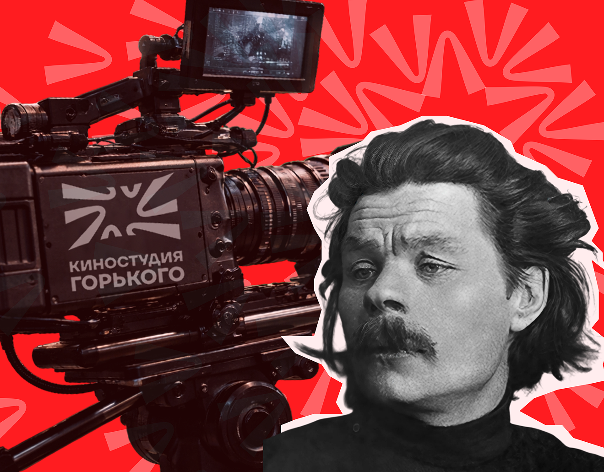
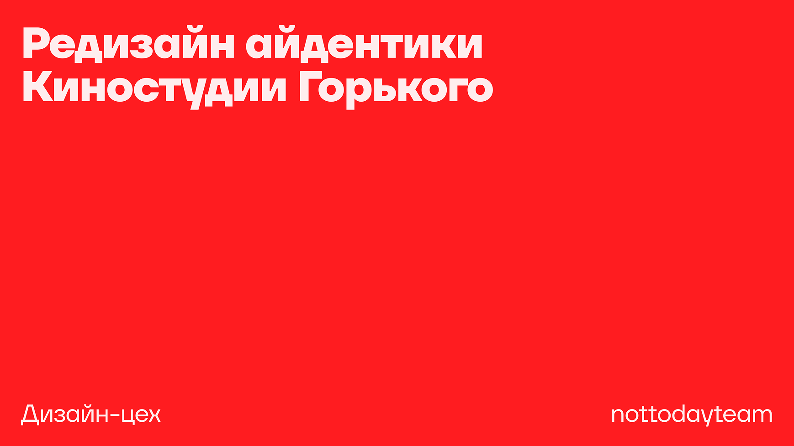
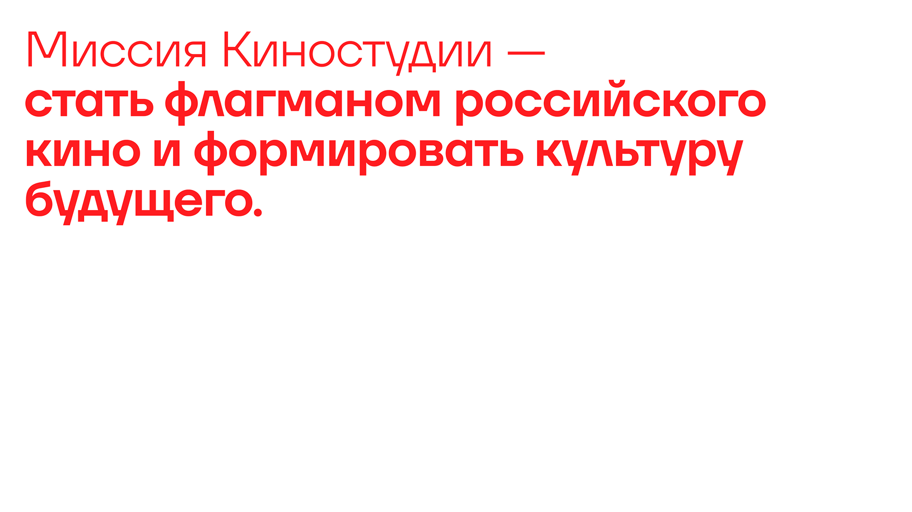
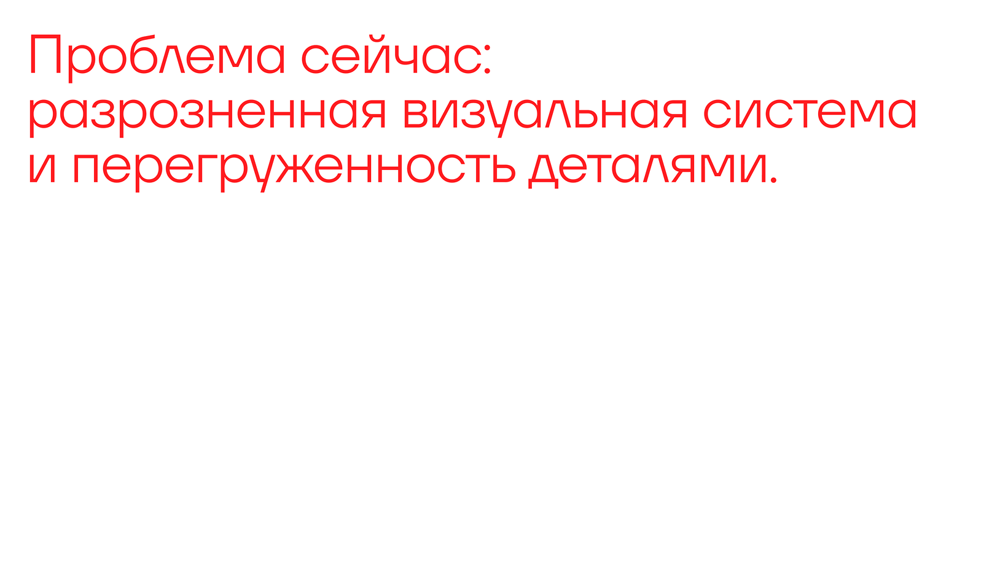
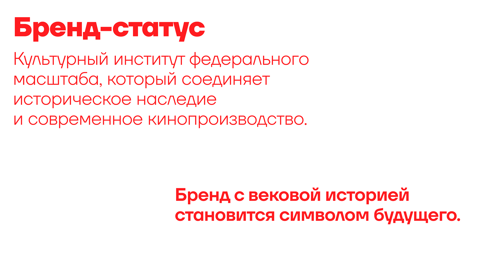
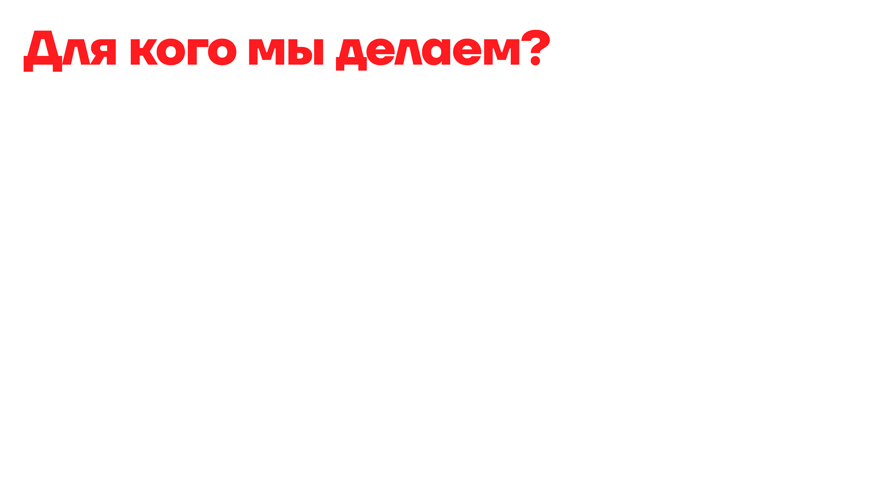
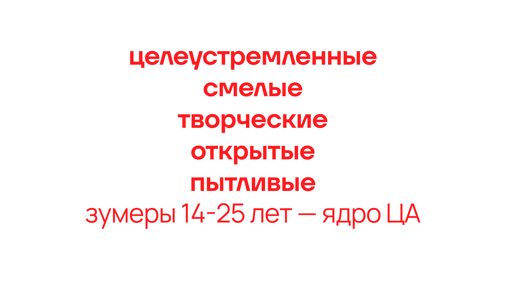

case / multidisciplinary design
Gorki
Визуальный кейс про плотную графику, темную среду и напряженный контраст. Задача — собрать образ, который выглядит как самостоятельная система, а не набор отдельных макетов.
Approach
Я работал с ощущением цифрового пространства: темный фон, холодный свет, крупные формы и резкие акценты. Такой язык помогает кейсу держать цельность на разных носителях.
Visual tension
Контраст, масштаб и плотная композиция вместо мягкой декоративности.
System logic
Повторяемые приемы, чтобы проект можно было расширять сериями.
Brand signal
Цельный визуальный тон, который считывается быстро и уверенно.





